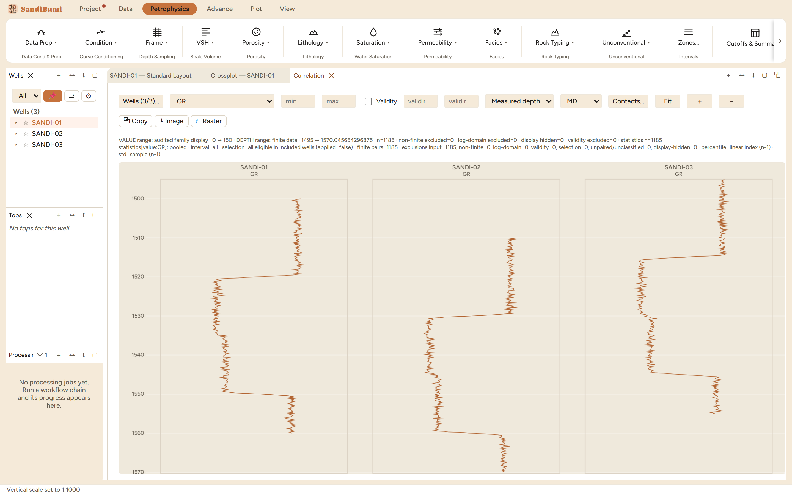

The correlation panel puts wells side by side on one shared depth axis so
the same bed can be followed across the field: the tool for carrying tops
between wells, judging whether a sand thins or shales out, and reading
structural offset directly. On the three example wells the same
sand–shale–sand package steps progressively deeper from SANDI-03
to SANDI-01, which is visible in one glance here and in no single-well
view.
The pane

GR across SANDI-01/-02/-03 on measured depth. The shale top
picks up roughly 1520, 1530 and 1517 m in the three wells; the offset is
the structure.
Wells (3/3)… chooses which wells and their order; the active
well group filters the list like every other multi-well tool.
The curve select, min/max and an optional validity range apply to every
column, so the wells are compared on identical display terms.
The datum select is the flattening control: measured depth shows
the wells as drilled; choosing a top as datum hangs every well from that
surface so stratigraphic thickness reads directly.
Contacts… overlays fluid-contact markers; Fit zooms the
shared axis to the covered interval; ＋/− add and remove curve
columns per well.
Step by step
Open Plot ▸ New Correlation, pick the wells and a curve every
well carries (GR is the usual spine).
Read the panel on measured depth first: the raw offsets are the
structure, and an implausible offset is usually a depth-reference
problem, worth catching before any flattening hides it.
Switch the datum to a common top to flatten on it, then follow beds
between wells and place or adjust tops in the tops editor.
Add a second curve column (resistivity, porosity) where lithology alone
is ambiguous.
Reading the result
The audit lines pool the population across the included wells and say so
explicitly, in the panel's own words:
VALUE range: audited family display · 0 → 150 · DEPTH range: finite data ·
1495 → 1570.045654296875 · n=1185 · non-finite excluded=0 · log-domain
excluded=0 · display hidden=0 · validity excluded=0 · statistics n=1185
statistics[value:GR]: pooled · interval=all · selection=all eligible in
included wells (applied=false) · finite pairs=1185 · ...
The value range comes from the audited family display (0–150 gAPI
for GR), so every column is on the same axis by construction; n=1185 is the
three wells' 395-sample sections pooled.
QC and pitfalls
One datum at a time. A flattened view answers a stratigraphic
question and hides the structural one; check measured depth first, then
flatten deliberately.
Compare like curves. The panel draws whatever curve name each
well resolves; a well where GR_N (normalised) exists while its neighbours
show raw GR will look different for the wrong reason. Normalise first, or
plot the raw curve everywhere.
Depth references before geology. An offset that disagrees with
the structure map by a constant is a datum or depth-unit problem in one
well's delivery, not a fault.